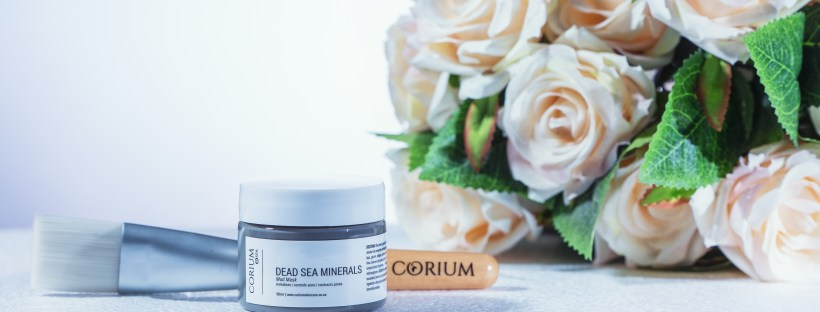
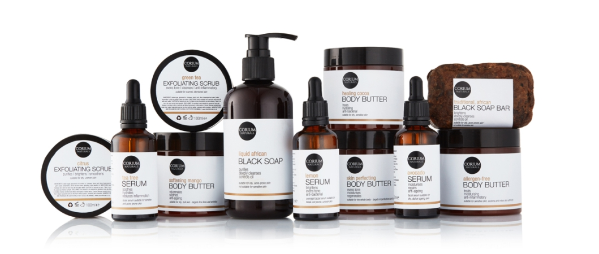

Why is good skin care important?
|
Good skin care is important for the following reasons:It helps your skin stay in good condition: You’re shedding skin cells throughout the day, so it’s important to keep your skin glowing and in good condition. An effective routine can help prevent acne, treat wrinkles, and help keep your skin looking its best. Your skin will look more youthful: As you age, your skin’s cells turn over more slowly, make it look duller and less radiant. Using a quality skin care line can help remove dead skin cells so your body will replace them with newer, more youthful cells. Prevention is easier than correction: Preventing skin problems is easier -– and less costly – than trying to fix them in the future. Your self-confidence will get a boost: When your skin looks better, you’ll feel better about yourself and have more self-confidence. |
|---|
What are some good skin care methods? |
|
|---|---|
| |
What benefits do quality skin care products provide? | |
|